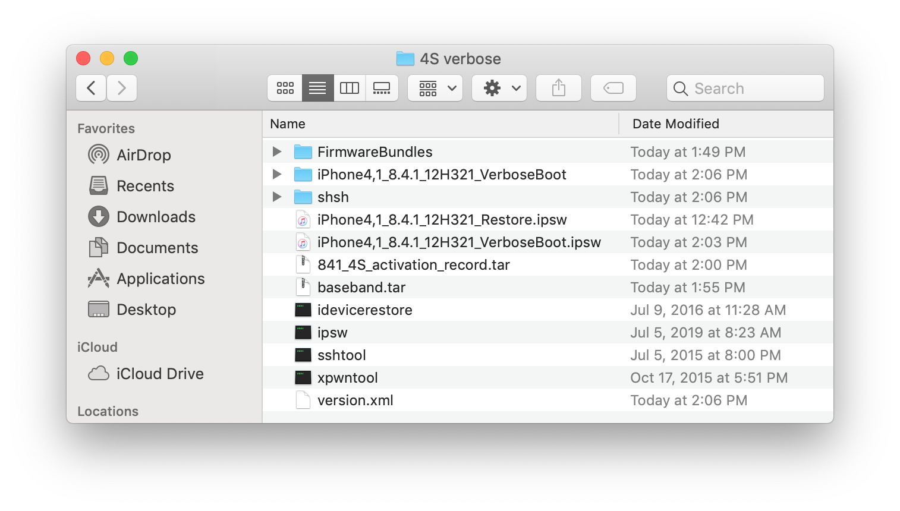
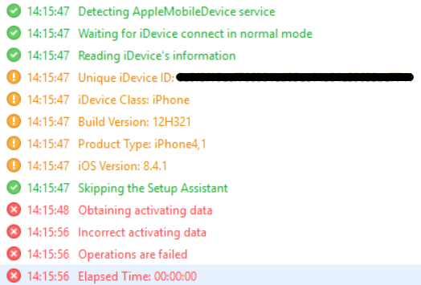
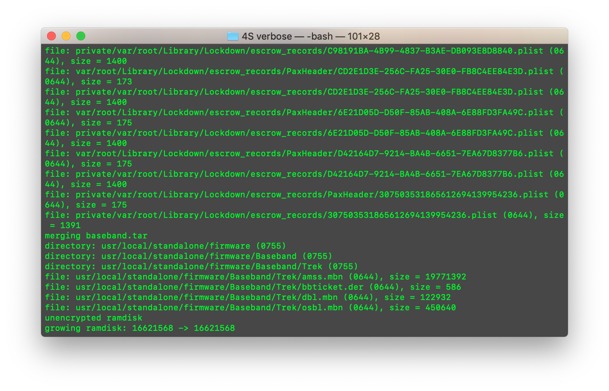
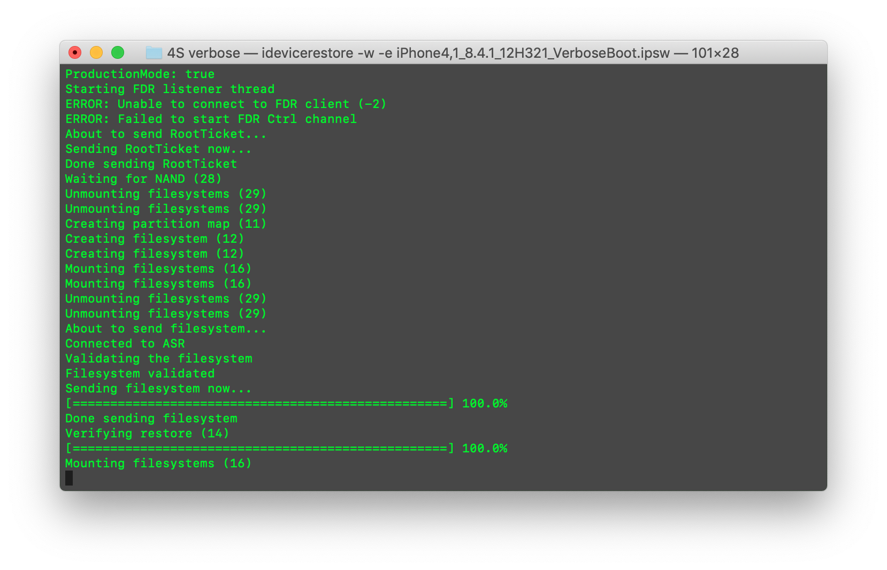

Verbose Restoring an iPhone 4S
2020年6月3日
Imported and Revised: 2025年10月8日
A rather short tutorial on how to force restored_external to display verbose output during the restore process.
What you’ll need:
odysseusOTA2
Verbose restore bundles by OothecaPickle
Foundation
Through a little research, I learned that through the proper patching, a user can patch the restored_external to show verbose text during the restore process of iOS.
A user by the name of OothecaPickle on Github created his own fork of xpwn, and included bundles for downgrading/upgrading a 32bit device using Odysseus Bundles that have restored_external patched.
One of the bundles included was for the iPhone 4S on 8.4.1 (12H321), so I decided to test it out. Here are my results.
Preperation
I started with a base of Odysseus because it contains sshtool, which is necessary to dump the baseband that is currently installed onto the device. The baseband the device contains is version 5.5.00 which corresponds to 8.4.1. This eliminates any issues with baseband.

Initially, I tried to create the IPSW without adding any activation records to the IPSW because I didn't expect the device to fail during activation. I also tried to restore to an IPSW without any custom baseband, and the device still failed to activate.

I decided to try adding activation records that were manually dumped. I grabbed activation_records.plist using an SCP client located at:
/private/var/containers/Data/System/RANDOM_GUID_HERE/Library/activation_records

Creating the firmware
After I had collected the activation records, and bundled them into a tar file. I added the package to the custom firmware file while creating it using Odysseus.
The command used for creating the custom firmware:
./ipsw iPhone4,1_8.4.1_12H321_Restore.ipsw iPhone4,1_8.4.1_12H321_VerboseBoot.ipsw -memory 841_4S_activation_record.tar baseband.tar

Restoring
In order to restore a custom firmware, the device must be in a state to accept unsigned firmware images. To do this, the device must be in kloader DFU (kDFU) which can be done through sshtool and a pwnediBSS extracted from the custom IPSW, or using tihmstar's kDFUapp from his repo. I chose the latter, since it's quicker, and easier.
Last step is restoring the device. idevicerestore, idevicererestore, or even futurerestore could have worked for this, but I chose idevicerestore. I grabbed OTA blobs for 8.4.1 from TSS since Apple still signs them, and proceeded with the restore.
The command used for restoring to the custom firmware:
./idevicerestore -w -e iPhone4,1_8.4.1_12H321_VerboseBoot.ipsw

The restore succeeded and the device passed the -v variable to iBEC and the patch applied to restored_external worked, the device was completing the restore process with verbose output.
I got the DONE message in idevicerestore, and the device booted the setup screen, and the device was activated on iOS 8.4.1.
This does not allow the device to verbose boot. In order for a device to verbose boot untethered, an iBoot exploit is required, such as derebusantiquis for iOS 7.x (iBoot-1940). I have access to multiple devices with iOS 7 shsh blobs, so I can show a PoC of verbose restore + untethered verbose boot.